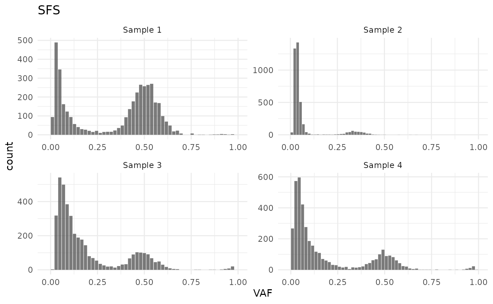
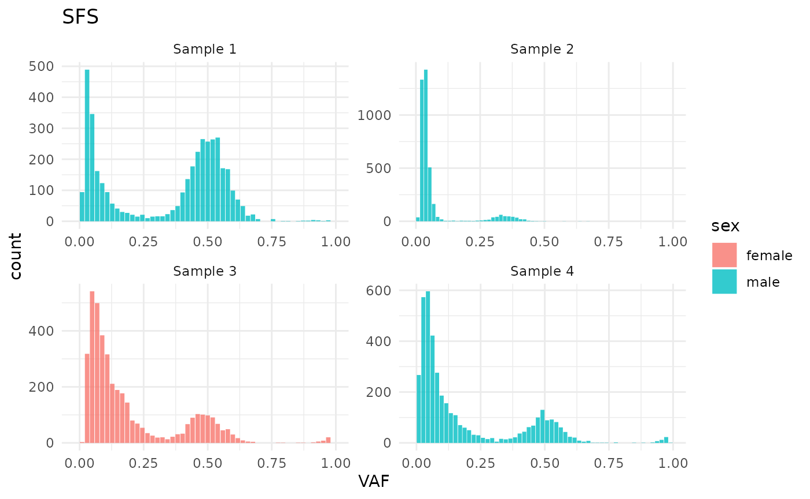
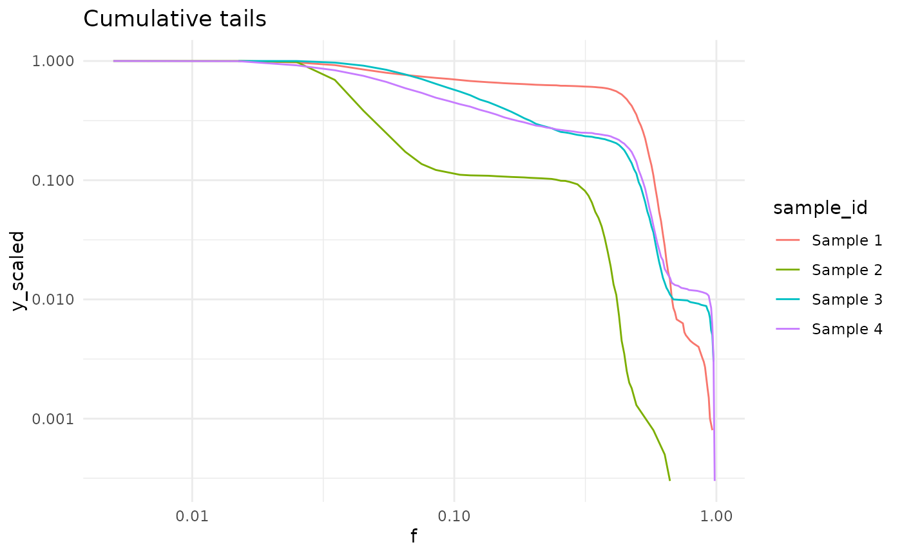

Statistics
statistics.RmdIntro
library(cevodata)
#>
#> Attaching package: 'cevodata'
#> The following object is masked from 'package:stats':
#>
#> filter
library(ggplot2)
theme_set(theme_minimal())Document under construction
SFS
get_SFS(cd)
#> # A tibble: 227 × 5
#> sample_id f_interval f y y_scaled
#> <chr> <chr> <dbl> <int> <dbl>
#> 1 Sample 1 (-0.0196,0] -0.0098 0 0
#> 2 Sample 1 (0,0.0196] 0.0098 94 0.0235
#> 3 Sample 1 (0.0196,0.0392] 0.0294 489 0.122
#> 4 Sample 1 (0.0392,0.0588] 0.049 346 0.0865
#> 5 Sample 1 (0.0588,0.0784] 0.0686 162 0.0405
#> 6 Sample 1 (0.0784,0.098] 0.0882 123 0.0307
#> 7 Sample 1 (0.098,0.118] 0.108 94 0.0235
#> 8 Sample 1 (0.118,0.137] 0.128 57 0.0142
#> 9 Sample 1 (0.137,0.157] 0.147 41 0.0102
#> 10 Sample 1 (0.157,0.176] 0.166 30 0.0075
#> # ℹ 217 more rows
plot_SFS(cd)
#> Warning in geom_bar(join_aes(bar_mapping, mapping), stat = "identity", alpha =
#> alpha, : Ignoring unknown aesthetics: width
plot_SFS(cd) +
aes(fill = sex)
#> Warning in geom_bar(join_aes(bar_mapping, mapping), stat = "identity", alpha =
#> alpha, : Ignoring unknown aesthetics: width
Cumulative tails
cd <- calc_cumulative_tails(cd)
names(cd$stats)
#> [1] "SFS" "cumulative_tails"
get_cumulative_tails(cd)
#> # A tibble: 294 × 6
#> sample_id f_interval f n y y_scaled
#> <chr> <chr> <dbl> <int> <int> <dbl>
#> 1 Sample 1 (0.96,0.97] 0.965 3 3 0.0008
#> 2 Sample 1 (0.94,0.95] 0.945 1 4 0.001
#> 3 Sample 1 (0.93,0.94] 0.935 2 6 0.0015
#> 4 Sample 1 (0.92,0.93] 0.925 1 7 0.0018
#> 5 Sample 1 (0.91,0.92] 0.915 2 9 0.0022
#> 6 Sample 1 (0.9,0.91] 0.905 2 11 0.0027
#> 7 Sample 1 (0.89,0.9] 0.895 1 12 0.003
#> 8 Sample 1 (0.88,0.89] 0.885 1 13 0.0032
#> 9 Sample 1 (0.86,0.87] 0.865 2 15 0.0037
#> 10 Sample 1 (0.85,0.86] 0.855 1 16 0.004
#> # ℹ 284 more rows
M(f) ~ 1/f
cd <- calc_Mf_1f(cd)
names(cd$stats)
#> [1] "SFS" "cumulative_tails" "Mf_1f"
get_Mf_1f(cd)
#> # A tibble: 404 × 6
#> sample_id f_interval f n `M(f)` `1/f`
#> <chr> <chr> <dbl> <int> <int> <dbl>
#> 1 Sample 1 (0.99,1] 0.995 0 0 1.00
#> 2 Sample 1 (0.98,0.99] 0.985 0 0 1.02
#> 3 Sample 1 (0.97,0.98] 0.975 0 0 1.03
#> 4 Sample 1 (0.96,0.97] 0.965 3 3 1.04
#> 5 Sample 1 (0.95,0.96] 0.955 0 3 1.05
#> 6 Sample 1 (0.94,0.95] 0.945 1 4 1.06
#> 7 Sample 1 (0.93,0.94] 0.935 2 6 1.07
#> 8 Sample 1 (0.92,0.93] 0.925 1 7 1.08
#> 9 Sample 1 (0.91,0.92] 0.915 2 9 1.09
#> 10 Sample 1 (0.9,0.91] 0.905 2 11 1.10
#> # ℹ 394 more rows
plot_Mf_1f(cd)
Sample level statistics
cd <- test_data
cd$metadata$patient_id <- c("Patient 1", "Patient 1", "Patient 2", "Patient 3")
calc_all_sample_stats(cd) |>
get_stats("sample_stats")
#> # A tibble: 4 × 2
#> sample_id mutation_burden
#> <chr> <int>
#> 1 Sample 1 4000
#> 2 Sample 2 3962
#> 3 Sample 3 4000
#> 4 Sample 4 4000Patient level statistics
calc_all_patient_stats(cd) |>
get_stats("patient_stats")
#> # A tibble: 3 × 2
#> patient_id mutation_burden
#> <chr> <int>
#> 1 Patient 1 4024
#> 2 Patient 2 4000
#> 3 Patient 3 4000